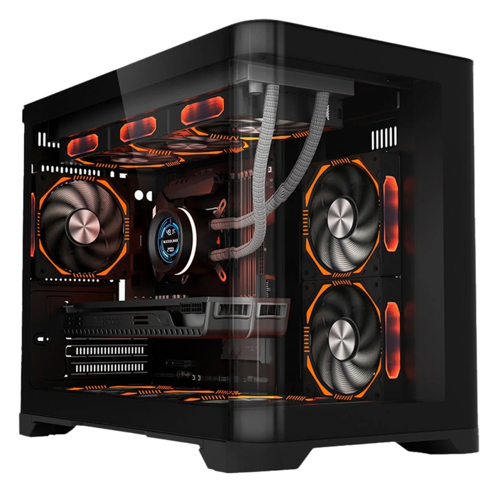

ryu
O PC, a mesa e o que fica guardado.
- GPU
- RTX 4070 Super
- CPU
- Ryzen 7 7700X
- RAM
- 32 GB DDR5
- Tela
- 240 Hz

1080p
Quanto roda
Faixas de FPS para Ryzen 7 7700X + RTX 4070 Super, tiradas de reviews e calculadoras públicas.
Tudo que passa da linha tracejada já é mais do que o monitor de 240 Hz consegue mostrar.
Fontes: